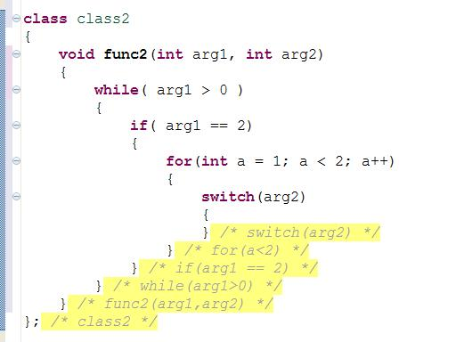
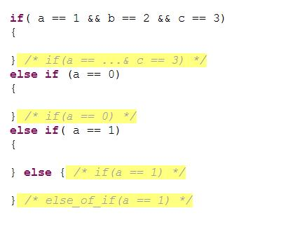
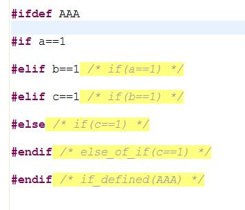

"Hints" are comments automatically added to the editor after "closing
brackets" (mainly "}") to state which statement they are closing.
The hints are not stored in the file, and cannot be edited (they are automatically updated when the statement changes).
Some nested statements screen shot:

"if-else" screen shot:

Preprocessor (C/C++ only) screen shot:

In this page you can set the preferences for enabling hints, when to
show each statement type, the font attributes for each statement type
and the display attributes for each statement type.
Notice that the configurations are per editor type (Java, C/C++, etc...) according to the tab selected.
The "Display hint in editor" checkbox can be used to enable/disable showing hint. You can do this also using the toolbar button or by pressing Ctrl+[, Ctrl+H (the "Enable hints in editor" command).
The "Always show hint when hovering"
checkbox can be used to disable/enable showing a hint when hovering over
a "}". If enabled, the hint would be shown even if the hint's "Display
hints in editor" is disabled or if there are less than "Min lines
between brackets" lines between the opening and closing brackets.
"Max length when hovered" -
When hovering over a "}", the hint's length would be this value
(overriding the the hint's "Max length" parameter). This setting is
applicable only if "Always show hint when hovering" is enabled.
Using this preferences page
First select the "statement type" on the left and then configure it on the right.
The "- Default -" statement type is used to set the configuration used
if the "Use default" checkbox is checked in one of the other "statement
types".
Each editor has it's own supported statements (only C/C++ has
"preprocessor" and only Java has "synchronized") so the different
statement types would not be listed here, but they should be
self-explanatory.
When to show
"Display hints in editor" - Disable/enable this statement hints.
"Min lines between brackets" -
The minimal lines between the statement and it's closing bracket that
would cause the hint to be shown (setting this to a low number, such as
1, would cause a hint to be shown for every closing bracket, which
might show a lot of unnecessary information).
Font
"Foreground color", "Background color" - The colors of the hint.
"Italic" - Should the hint font be "italic".
Display
"Max length" - The maximal
length of the hint. If the hint exceeds the maximal length, it would be
shortened using the selected ellipsis function.
"Strip whitespaces" - Strip whitespaces from the original statement when shown in the hint.
(Ellipsis) "In the middle" - Put "..." in the middle of the hint to shorten it.
(Ellipsis) "At the end" - Put "..." at the end of the hint to shorten it.